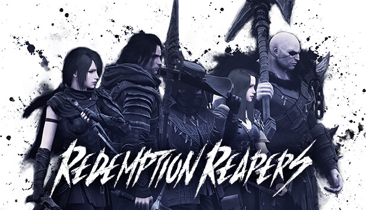

A Chance for Redemption

The Question
What is the logical mistake in your reasoning?
The Answer
From point 4, we know Agatha hates Charles.
Since Charles hates no one that Aunt Agatha hates (point 3), Charles does not
hate Aunt Agatha.
Thus, Charles cannot be the killer since a killer hates his victim.
From points 5 and 6, we know the butler hates everyone not richer than
Aunt Agatha and everyone that Aunt Agatha hates.
Since Agatha hates everyone except the butler (point 4), the butler hates
Charles.
According to point 7, no one hates everyone, so the butler doesn't hate
Agatha.
Thus, the butler cannot be the killer since a killer hates his victim.
Now, considering Agatha's perspective, we know from point 4 that Agatha hates
everyone except the butler.
Since no one hates everyone (point 7), Agatha doesn't hate herself.
The logical mistake in my previous reasoning was assuming that Agatha could
be the killer despite the fact that she didn't hate herself.
Given the new analysis, there is a contradiction in the information provided,
as there is no valid solution to the problem.
- A fallacious excuse!
- Could have done GDV and IDV analysis, but wrote paper instead